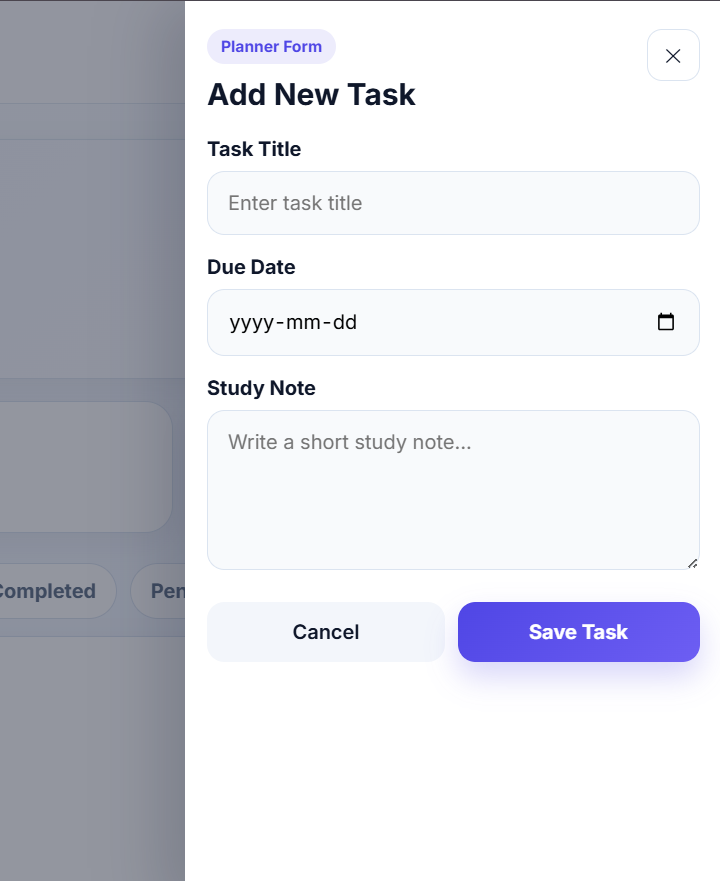
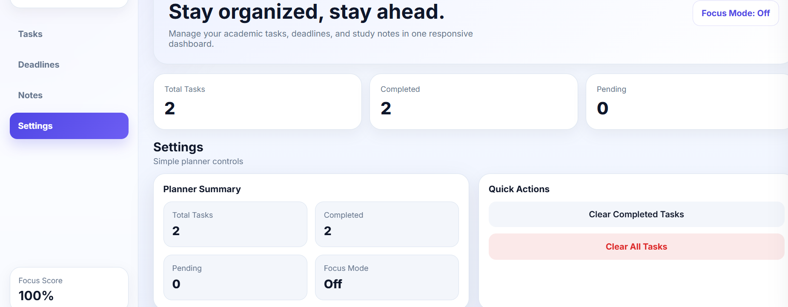

Project One
Student Life Planner Dashboard
Student Life Planner Dashboard is a responsive academic planning web app designed to help students manage tasks, deadlines, study notes, and daily planning in one organized place.

Process & Reflection
How I approached the project.
Problem
Students often need a simple way to organize academic tasks, deadlines, and notes without switching between multiple tools.
Solution
I built a dashboard where users can add tasks, track deadlines, manage notes, check task status, and use planner controls like focus mode and task summaries.
Reflection
This project helped me improve my JavaScript skills and understand how dashboard layouts can make student planning easier. I also learned how small features like task filters, quick add, and summary cards improve the user experience.
Skills Demonstrated
Tools, skills, and contribution.
Project Screenshots
Final visuals and process evidence.

